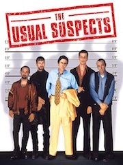

After 1 year in in doing nothing, I got bored and decided to join Le Wagon. My mission: learn how to code.
See for yourself
Le LabyrintheQuand Thomas reprend connaissance, il est pris au piège avec un groupe d'autres garçons dans un labyrinthe géant dont le plan est modifié chaque nuit. Il n'a plus aucun souvenir du monde extérieur, à part d'étranges rêves à propos d'une mystérieuse organisation appelée W.C.K.D. En reliant certains fragments de son passé, avec des indices qu'il découvre au sein du labyrinthe, Thomas espère trouver un moyen de s'en échapper. |
|
|  |
Usual SuspectInterrogé par la police à la suite de l'explosion criminelle d'un cargo, Verbal Kint se met à table : avec quatre autres gangsters, il s'est vu imposer une mission périlleuse par Keyser Söze, un malfrat craint de tous mais que personne ne connaît. Qui est ce mystérieux commanditaire ? Existe-t-il vraiment ? Bryan Singer nous entraîne dans les méandres d'un scénario éblouissant, multipliant les fausses pistes jusqu'au dénouement final. |
Harry PotterOrphelin, le jeune Harry Potter peut enfin quitter ses tyranniques oncle et tante Dursley lorsqu'un curieux messager lui révèle qu'il est un sorcier. À 11 ans, Harry va enfin pouvoir intégrer la légendaire école de sorcellerie de Poudlard, y trouver une famille digne de ce nom et des amis, développer ses dons, et préparer son glorieux avenir. |
This page has been coded during the FullStack program @LeW. That was probably the best experience of my entire life.